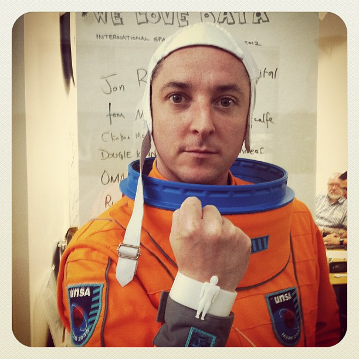
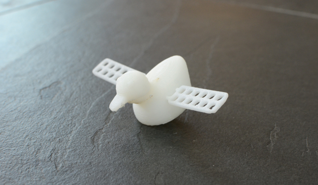
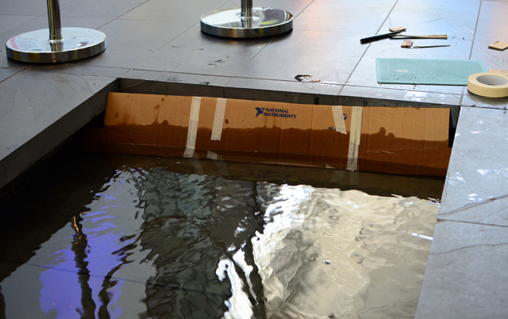
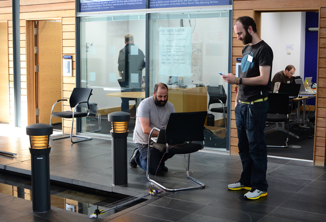
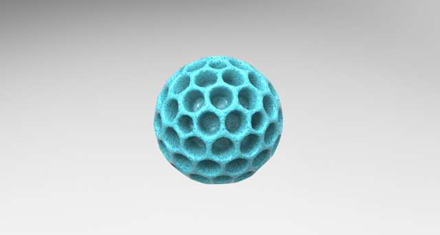
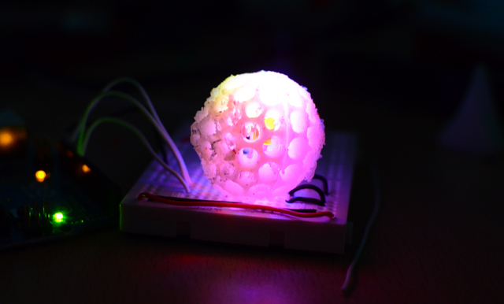

| #welovedata #spaceapps | ||
HOME |
| |
|  | ||
Star-Tweeting Bangle! You can do anything if you use social media in the right way. If Twitter can bring about democracy and give people a channel, can it also be used to help people reach for the stars. In this case quite literally! We have designed a bangle that connects to twitter…. And will only light up when Jon Spooner gets into space. Space for him meaning many different things – but in this case if enough people (yes you!) want to see him in space then they will Tweet it. The Bangle scans twitter trends lists for the key words Jon + Spooner and when its there it will light up. Thinking beyond this – can we give people digital tools for hope, dreams and ambition? From raising funds for charities to achieving personal goals – what can data-connected jewellery do for humankind? Let's get Jon Spooner in Space! |
||
   |
|
|
The ISSDuck The ISSDuck – connects communities and organisations through snapshot connections to life beyond planet earth. To take people for a micro-moment away from their daily lives and just for that moment connect them to the bigger picture. Beyond this idea we could look at community designed responses that build hope and wonder during our 9-5s, our school days (imagine this outside the physical block in an inner-city school), in maternity wards, and somewhere on the lawn of the Whitehouse. Come on – let's just take a moment to connect! |
||
  |
||
Connect and Survive! For a lot of people having access to medical information can be scary – often resulting is life-threatening situations – particularly when dealing with chronic diseases. In Connect and Survive! we want people to learn to manage long term healthcare through connecting to healthcare information in their homes. We don't want people to have to log on and check deck on a screen, we want people to have data made physical and visible in their homes. The example we are showing here is for ambient display objects to reveal the status of the next day's pollen count. This way, asthmatics and hay fever sufferers can start to plan what they need to do in advance as part of their daily routine – not something that requires a log-in and check routine (I know – I don't do it!). The bigger picture is that we could apply this to a range of healthcare products that fits with how we live our lives on a daily basis. Let's connect to healthcare in new ways! |
||